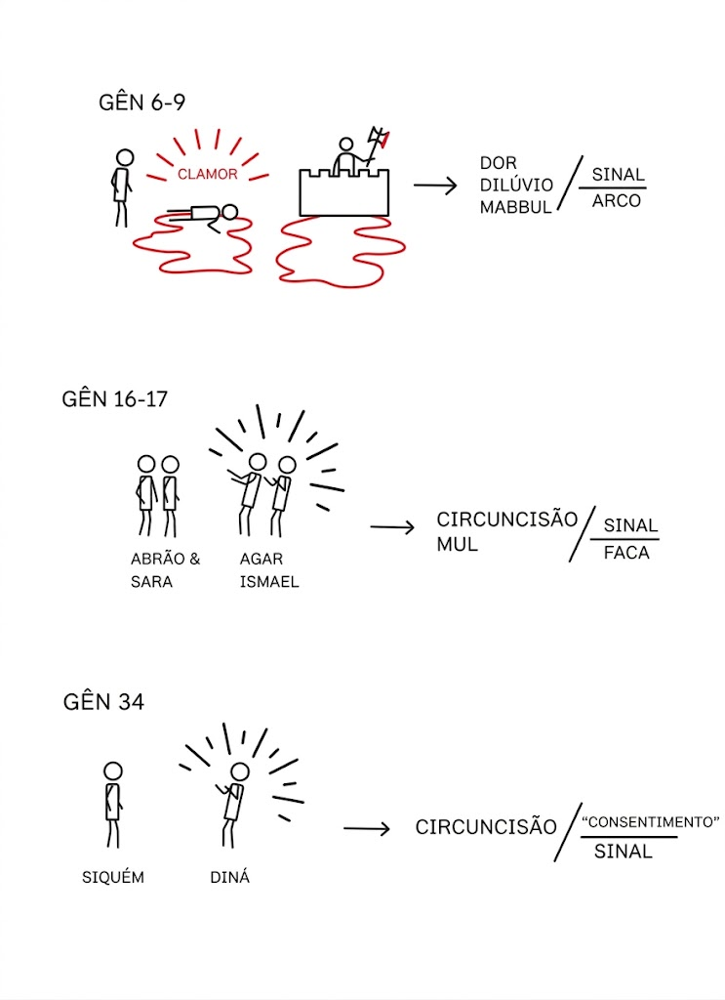
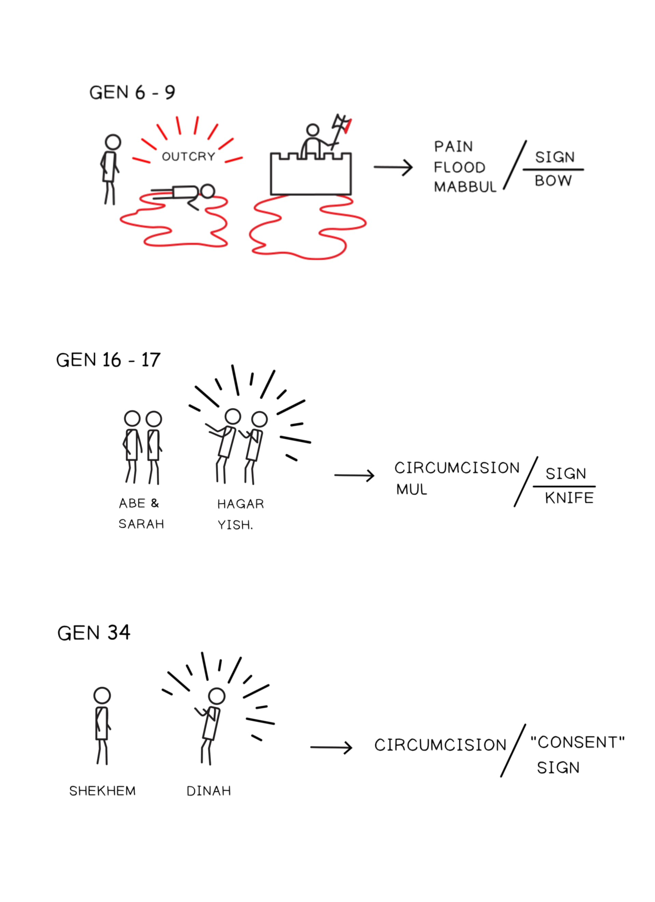

Dentro da história da Bíblia, poucos personagens rivalizam com a importância de Abraão e Sara. Abraão é mencionado em quase todas as partes da Bíblia, e a história de sua jornada da Babilônia para Canaã, os contos de seus fracassos e sua fé, e as promessas da aliança que Deus faz com ele são todos fundamentais na história bíblica e nas tradições judaica e cristã.Within the story of the Bible, there are few characters who rival the importance of Abraham and Sarah. Abraham is mentioned in nearly every part of the Bible, and the story of his journey from Babylon to Canaan, the tales of his failures and his faith, and the covenant promises that God makes to him are all foundational in the biblical story and in both Jewish and Christian traditions.
A forma como seus nomes são pronunciados em português vem da grafia e pronúncia gregas. A pronúncia original em hebraico de seus nomes é um pouco diferente, e no restante destas anotações, seus nomes aparecerão com base no hebraico e não no grego.The way their names are pronounced in English comes from the Greek spelling and pronunciation. The original Hebrew pronunciation of their names is a bit different, and in the rest of these notes, their names will appear based on the Hebrew and not the Greek.
O seguinte é apenas uma amostra de como autores bíblicos posteriores recordam a história de Avraham e Sarai.The following is just a sample of how later biblical authors recall the story of Avraham and Sarai.
Deus ouviu o gemido deles e se lembrou da sua aliança com Abraão, com Isaque e com Jacó.God heard their groaning and he remembered his covenant with Abraham, with Isaac and with Jacob.
Lembrar-me-ei da minha aliança com Jacó, e também da minha aliança com Isaque, e também da minha aliança com Abraão; e lembrar-me-ei da terra.I will remember my covenant with Jacob and my covenant with Isaac and my covenant with Abraham, and I will remember the land.
Porque não me seguiram de todo o coração, nenhum dos que tinham vinte anos ou mais, quando saíram do Egito, verá a terra que prometi com juramento a Abraão, Isaque e Jacó.Because they have not followed me wholeheartedly, not one of those who were twenty years old or more when they came up out of Egypt will see the land I promised on oath to Abraham, Isaac and Jacob.
Vejam, eu lhes dei esta terra. Entrem e tomem posse da terra que o Senhor jurou dar a seus antepassados — a Abraão, Isaque e Jacó — e aos seus descendentes depois deles.See, I have given you this land. Go in and take possession of the land the LORD swore he would give to your fathers—to Abraham, Isaac and Jacob—and to their descendants after them.
“Por que hão de dizer os egípcios: ‘Foi com intenção maligna que os tirou, para matá-los nos montes e destruí-los da face da terra’? Desvia-te do teu ardor; volta-te, e não tragas calamidade sobre o teu povo. Lembra-te de teus servos, Abraão, Isaque e Israel, aos quais juraste por ti mesmo: ‘Multiplicarei a tua descendência como as estrelas do céu, e toda esta terra que prometi darei à sua descendência, e ela a possuirá para sempre.’”“Why should the Egyptians say, ‘It was with evil intent that he brought them out, to kill them in the mountains and to wipe them off the face of the earth’? Turn from your fierce anger; relent and do not bring disaster on your people. Remember your servants Abraham, Isaac and Israel, to whom you swore by your own self: ‘I will make your descendants as numerous as the stars in the sky and I will give your descendants all this land I promised them, and it will be their inheritance forever.’”
Josué disse a todo o povo: “Assim diz o Senhor, o Deus de Israel: ‘Há muito tempo, os seus antepassados, incluindo Terá, pai de Abraão e de Naor, viveram além do Eufrates e adoraram outros deuses. Mas eu tirei o seu pai Abraão da terra além do Eufrates e o conduzi por toda Canaã, e lhe dei muitos descendentes.’”Joshua said to all the people, “This is what the LORD, the God of Israel, says: ‘Long ago your ancestors, including Terah the father of Abraham and Nahor, lived beyond the Euphrates River and worshiped other gods. But I took your father Abraham from the land beyond the Euphrates and led him throughout Canaan and gave him many descendants.’”
“Olhem para Abraão, seu pai, e para Sarai, que lhe deu à luz. Quando o chamei, ele era apenas um homem, mas eu o abençoei e o multipliquei.”“... look to Abraham, your father, and to Sarai, who gave you birth. When I called him he was only one man, and I blessed him and made him many.”
“Filho do homem, os que habitam naquelas ruínas na terra de Israel estão dizendo: ‘Abraão era apenas um homem, e contudo possuiu a terra. Mas nós somos muitos; certamente a terra nos foi dada como possessão.’”“Son of man, the people living in those ruins in the land of Israel are saying, ‘Abraham was only one man, yet he possessed the land. But we are many; surely the land has been given to us as our possession.’”
Responderam e disseram-lhe: “Abraão é o nosso pai.” Jesus disse-lhes: “Se sois filhos de Abraão, fazei as obras de Abraão.”They answered and said to him, “Abraham is our father.” Jesus said to them, “If you are Abraham’s children, do the deeds of Abraham.”
Sem se tornar fraco na fé, ele contemplou seu próprio corpo, já como morto, pois tinha cerca de cem anos, e a esterilidade do ventre de Sarai; contudo, no que se refere à promessa de Deus, não vacilou em incredulidade, mas se fortaleceu na fé, dando glória a Deus...Without becoming weak in faith he contemplated his own body, now as good as dead since he was about a hundred years old, and the deadness of Sarai’s womb; yet, with respect to the promise of God, he did not waver in unbelief but grew strong in faith, giving glory to God...
Pela fé, Abraão, quando chamado, obedeceu, saindo para um lugar que havia de receber como herança; e saiu, sem saber para onde ia.By faith Abraham, when he was called, obeyed by going out to a place which he was to receive for an inheritance; and he went out, not knowing where he was going.
E, se vocês pertencem a Cristo, então são descendência de Abraão e herdeiros de acordo com a promessa.And if you belong to Christ, then you are Abraham’s descendants, heirs according to promise.
Pela fé, também Sara recebeu capacidade para conceber, mesmo além do tempo próprio da vida, porque considerou fiel aquele que havia prometido.By faith even Sarai herself received ability to conceive, even beyond the proper time of life, since she considered him faithful who had promised.
Porventura Abraão, nosso pai, não foi justificado por obras, quando ofereceu Isaque, seu filho, sobre o altar? Vedes que a fé estava cooperando com as suas obras, e que, por meio das obras, a fé foi aperfeiçoada...Was not Abraham our father justified by works when he offered up Isaac his son on the altar? You see that faith was working with his works, and as a result of the works, faith was perfected ...


Isaías 51 e a História de Avraham. Ilustração criada por Tim Mackie para BibleProject Classroom: Abraão (2021).Isaiah 51 and the Avraham Story. Illustration created by Tim Mackie for BibleProject Classroom: Abraham (2021).
Como o cântico de Maria em Lucas 1 e as palavras de Deus por meio do profeta em Isaías 51 descrevem o papel da história de Avraham e Sara para compreender os propósitos de Deus em cada época?How do Mary’s song in Luke 1 and God’s words through the prophet in Isaiah 51 describe the role of Avraham and Sarah’s story in understanding God’s purposes in every age?